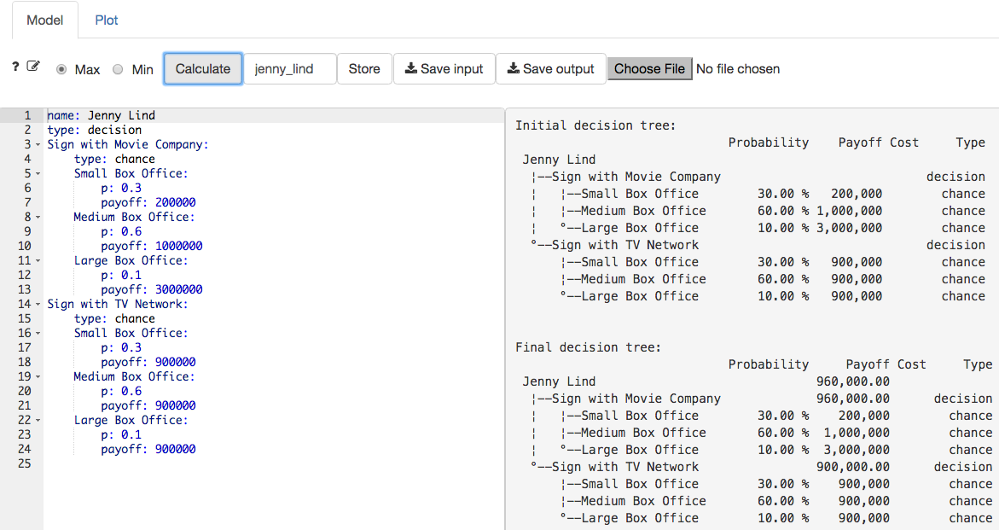
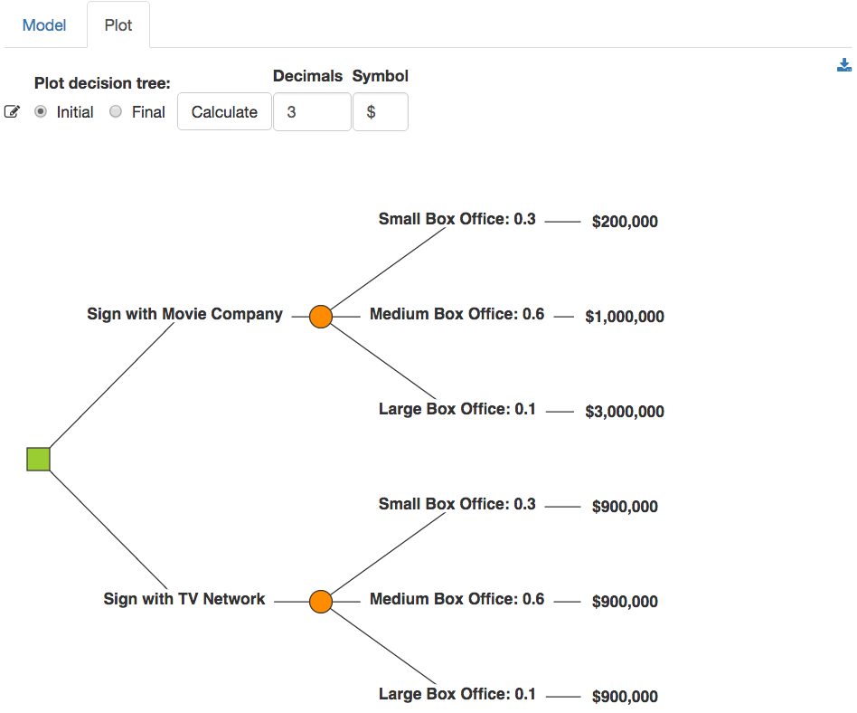
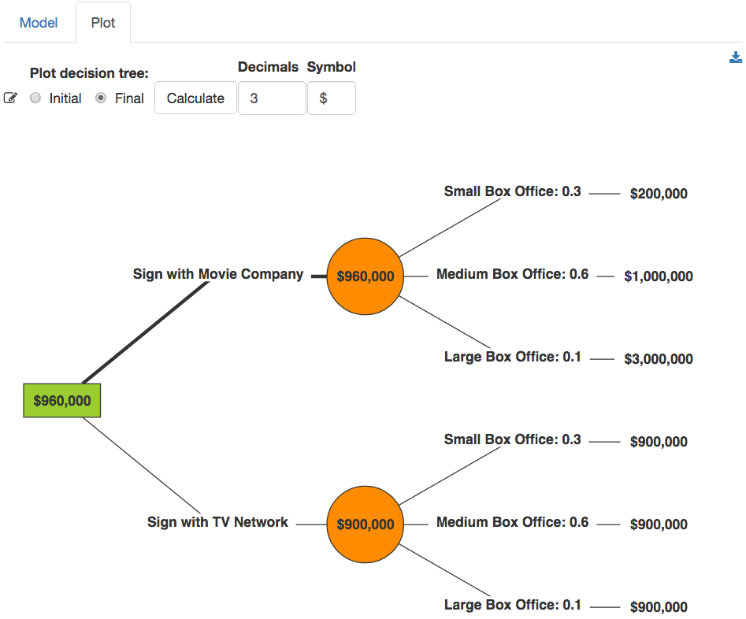

Decide > Decision tree
Create and evaluate a decision tree
To create and evaluate a decision tree first (1) enter the structure of the tree in the input editor or (2) load a tree structure from a file. When you first navigate to the Decide > Decision tree tab you will see an example tree structure. This example was created by Christop Glur, the developer of the data.tree library (example source).
To enter a new structure start by providing a name for the tree. In the example below the name for the decision tree is entered as follow: name: Jenny Lind. The next step is to indicate the type of the first node. Options are type: decision or type: chance.
In the provided example the first node is a decision node. The decision maker has to decide to Sign with Movie Company or Sign with TV Network. Both options lead to a chance node with probabilities and payoffs.
Note: Indentation is critically important when defining a tree structure. Use tabs to create branches as shown in the example. Names for branches must be followed by a
:and information about the branch must be indented using a tab.
After providing the name for the decision Sign with Movie Company the next line must be indented with a tab. In the example, the next line starts the description of a chance node (type: chance). There are 3 possibilities in the example: (1) Small Box Office, (2) Medium Box Office, and (3) Large Box Office, each with a probability and a payoff. These are the end-points for one branch of the tree and are often referred to as terminal nodes or leaves of a tree. All endpoints must have a payoff value.
Note: Probabilities for a chance node should sum to one and all probabilities smaller than 1 must be entered with a leading zero (i.e., 0.1 will work but .1 will not). If you do enter a probability without a leading zero anyway you will see the following message:
Error: non-numeric argument to a binary operator. Add leading 0’s as needed and the error will go away when you click on theCalculatebutton again.
In the example, the decision option Sign with TV Network has the same structure and terminal nodes but different payoffs.
After specifying the tree structure in the editor, press the Calculate button to see the Initial and Final decision tree in text format on the right-side of the screen (see screen shot below). The initial tree simply shows the tree structure that was specified, together with the node types, probabilities, and payoffs. The final tree shows the optimal decision strategy determined by folding-back the tree. In this case, the optimal decision is to Sign with Movie Company because this decision has a higher Expected Monetary Value (EMV) or payoff.

For visual representation of the decision tree click the Plot tab. If you already clicked the Calculate button in the Model tab you will see a graph of the Initial decision tree (see screen shot below). Decision nodes are shown in green and chance nodes in orange. If the tree does not look as you intended/expected please return to the Model tab and edit the tree structure.

The Final decision graph shows the optimal decision determined by folding-back the tree. As also shown in the Model tab, the optimal decision is to Sign with Movie Company because this decision has a higher Expected Monetary Value. Note that the optimal decision at each decision node is indicated by a thickness of the line connecting to the next node.

The EMV for the chance node following a decision to Sign with Movie Company is:
\[ 0.3 \times 200,000 + 0.6 \times 1,000,000 + 0.1 \times 3000000 = 960,000 \]
The EMV for the chance node following a decision to Sign with TV Network is:
\[ 0.3 \times 900,000 + 0.6 \times 900,000 + 0.1 \times 900,000 = 900,000 \]
© Vincent Nijs (2015)